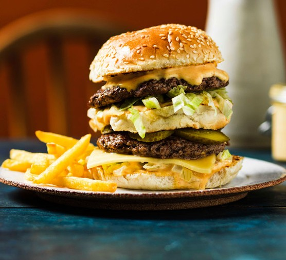

Burger

The meanest, keenest, toughest burger in town, right from your kitchen.
Discover our best burger recipes, with everything you'll ever need to put
inside a bun, from juicy beef patties, to chicken, turkey, veggie and
vegan burgers.
Ingredients
- Patty
- Bun
- Lettuce have Lettuce
Instructions
-
Grind that fatty patty into a paste, grind cinammon sticks and turn.
-
Spread the juicy goodness around a pan & cook on high heat for 10
minutes.
- Once bronzed, place into bun with lettuce & serve.